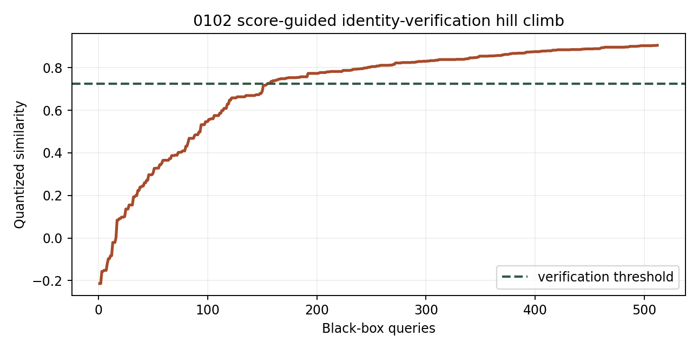

Controlled privacy attack evaluation · batch 1
第一批未覆盖类别攻击评估
同一套现有 Adult 与 CASIA-FaceV5 资产，分别包装成等级、存在性和对象同一性三种数据产品。攻击只访问产品声明的返回值；页面中的内部阈值、私有集合和注册模板仅供评价者核对。
研究用途声明：本演示用于通过受控攻击构建更准确的安全评价体系。实验仅在本地、固定数据和离线模型上运行，不连接真实业务系统，不提供面向第三方系统的攻击能力。
0202
标准参照等级与分段
Adult收入模型只返回A—D等级。攻击者把查询结果当作硬标签，主动挑选最靠近当前替代模型边界的档案继续查询。
替代模型在未查询评价集上复现目标等级的比例
永远猜最常见等级时的一致率
只计算等级API调用，不读取内部概率
相对多数类基线归一化，越高表示越容易复制
等级规则提取曲线
纵轴为未查询档案上的等级一致率；横轴为累计API调用。
不同查询预算
| 查询 | 一致率 | Macro-F1 | 查询标签 A/B/C/D |
|---|---|---|---|
| 64 | 72.7% | 72.6% | A:16 / B:18 / C:16 / D:14 |
| 128 | 75.6% | 75.2% | A:30 / B:46 / C:35 / D:17 |
| 256 | 75.7% | 75.1% | A:45 / B:89 / C:105 / D:17 |
| 512 | 81.7% | 82.0% | A:69 / B:183 / C:240 / D:20 |
| 1024 | 83.2% | 83.3% | A:111 / B:501 / C:359 / D:53 |
最终混淆矩阵
| 真实\预测 | A | B | C | D |
|---|---|---|---|---|
| A | 1360 | 424 | 0 | 0 |
| B | 73 | 1647 | 113 | 5 |
| C | 0 | 171 | 1455 | 184 |
| D | 0 | 0 | 245 | 1541 |
安全评价含义
等级输出仍可被查询样本转化为训练标签；替代模型的一致率衡量等级规则可复制程度。
类别边界：交易交付物是标准参照等级，因此属于0202；内部使用了模型，并不会自动把产品归入模型类。
存在性查询
接口对组合数值条件只回答true/false。攻击者知道一个候选总体的非敏感属性，但不知道谁出现在私有库中；自适应群组测试逐步缩小仍可能命中的候选集合。
被正确定位的私有库成员
未产生假阳性；风险来自成员存在性泄露
攻击者已有的外部候选知识
接口从未返回记录或计数
群组测试与逐条枚举
自适应群组测试逐条枚举
预算下的恢复效果
| 查询 | 恢复成员 | 群组测试召回率 | 枚举召回率 |
|---|---|---|---|
| 64 | 4/32 | 12.5% | 6.2% |
| 128 | 10/32 | 31.2% | 18.8% |
| 256 | 23/32 | 71.9% | 37.5% |
| 512 | 32/32 | 100.0% | 68.8% |
| 1024 | 32/32 | 100.0% | 100.0% |
前十次真实查询轨迹
| # | 组合条件 | 候选数 | 响应 |
|---|---|---|---|
| 1 | all candidate profiles | 1024 | true |
| 2 | all candidate profiles AND fnlwgt > 177878 | 510 | true |
| 3 | all candidate profiles AND fnlwgt > 177878 AND fnlwgt > 232590 | 253 | true |
| 4 | fnlwgt > 177878 AND fnlwgt > 232590 AND fnlwgt > 300184 | 126 | true |
| 5 | fnlwgt > 232590 AND fnlwgt > 300184 AND fnlwgt <= 355746 | 63 | true |
| 6 | fnlwgt > 300184 AND fnlwgt <= 355746 AND fnlwgt <= 323704 | 31 | false |
| 7 | fnlwgt > 300184 AND fnlwgt <= 355746 AND fnlwgt > 323704 | 32 | true |
| 8 | fnlwgt <= 355746 AND fnlwgt > 323704 AND fnlwgt <= 338897 | 16 | false |
| 9 | fnlwgt <= 355746 AND fnlwgt > 323704 AND fnlwgt > 338897 | 16 | true |
| 10 | fnlwgt > 323704 AND fnlwgt > 338897 AND fnlwgt <= 344988 | 8 | false |
安全评价含义
灵活的组合条件使真假接口成为群组测试预言机；风险取决于候选知识、查询预算与可定制条件。
实验假设：攻击者拥有候选总体及其非敏感属性，目标是判断哪些候选出现在私有库中。
类别边界：每次响应只有“是否存在”，所以属于0301；攻击最终恢复出成员，不会把产品本身改判成记录与子集查询。
对象同一性核验
CASIA-FaceV5核验接口比较探针与一个固定注册对象，只返回三位小数相似度和same/different。攻击者使用辅助人脸构成的低维子空间进行黑盒坐标爬山。
攻击开始时的最优量化响应
512次查询后的量化响应
在独立身份对上按约1% FAR校准
第一次得到same判定的累计查询次数
评价者视角下的输入与恢复结果
查询预算检查点
| 查询 | 最佳相似度 | 判定 |
|---|---|---|
| 32 | 0.193 | 未通过 |
| 64 | 0.365 | 未通过 |
| 128 | 0.663 | 未通过 |
| 256 | 0.808 | 通过 |
| 512 | 0.905 | 通过 |
校准FAR=1.1%，校准TPR=72.7%。
黑盒爬山轨迹

安全评价含义
相似度反馈形成连续优化信号；查询预算越高，攻击者越能逼近注册模板方向。
类别边界：核心响应是在判断两个对象是否为同一身份，因此属于0102；相似度是核验响应的一部分，不按数值型指标另行分类。
如何进入统一安全评价
三项实验都输出一条“查询预算—攻击效果”曲线。评价时不只看一次攻击是否成功，还应同时记录攻击者先验、接口可定制程度、返回精度、速率限制和达到目标泄露水平所需的查询量。完整可复现实验结果保存在同目录的 first_batch_attack_demo.json。